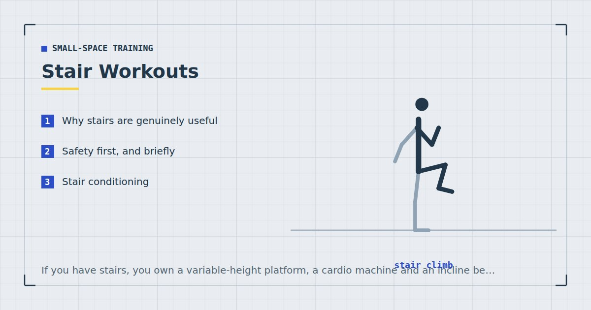

Small-Space Training
Stair Workouts: The Only Equipment Your Building Gave You
If you have stairs, you own a variable-height platform, a cardio machine and an incline bench. Almost nobody uses them as any of those things.

A staircase gives you three things that are otherwise hard to obtain at home: a range of platform heights in fixed increments, a way to elevate your hands or feet by a precise amount, and a form of conditioning with genuine load rather than just movement.
Most people walk up them twenty times a day and never think of them as training equipment.
Why stairs are genuinely useful
Load. Climbing stairs raises your entire bodyweight against gravity repeatedly. That is a meaningfully harder cardiovascular task than walking on the flat, which is why a flight of stairs leaves people breathing hard when a hundred metres of corridor does not.
Increments. A standard domestic step is around 18 to 20 centimetres. That gives you a ladder of heights — one step, two steps, three — which is exactly what a progression needs and exactly what most household furniture fails to provide. This is why the stair push-up is such a useful rung in the push-up progression ladder.
Quiet. Stair climbing is low-impact and, in a house, happens in a stairwell rather than over someone's ceiling. For anyone whose main constraint is noise, this matters — see quiet home workouts.
Safety first, and briefly
- Never train to fatigue on stairs going down. Descending tired is where falls happen.
- Keep one hand free for the rail on any climbing interval.
- Wear shoes, or train barefoot only on carpeted stairs with good grip. Socks on wooden stairs is how people end up in A&E.
- Do not do balance-dependent exercises at the top of a flight.
- If you feel dizzy, sit down on a step immediately rather than trying to reach the bottom.
These are not decorative warnings. Stairs are the one piece of home training equipment where a mistake has a fall at the end of it.
Stair conditioning
Stair intervals. Walk or jog up, walk down, repeat. Thirty seconds up-and-down at pace, thirty seconds rest, six to ten rounds. Simple, effective, and genuinely hard by round four.
Step-up intervals. If your flight is short, use the bottom two steps and step up and down continuously for forty seconds. Same effect with less travel, and no descending at speed.
Slow loaded climbs. Carry something heavy — a rucksack with books, a couple of shopping bags — and walk up and down at a normal pace for three or four minutes. Low-impact, high-load, and surprisingly demanding.
Interval training of this kind produces documented improvements in cardiorespiratory fitness,1 and stairs make it accessible without any equipment at all. Use the talk test to check the effort is genuinely vigorous.2
Strength exercises on stairs
Step-ups. Onto the second or third step. Drive through the heel of the stepping foot without pushing off the trailing leg, pause at the top, lower under control. The higher the step, the harder. Three sets of eight to twelve per leg.
Elevated split squats. Rear foot on the bottom step, front foot on the floor. The bottom stair is often close to the ideal height for this, which most sofas are not — see Bulgarian split squats at home.
Calf raises off the edge. Stand on a step with your heels hanging off the back, and raise and lower through a full range. The extra range below floor level is the whole point and is why this is markedly better than calf raises on flat ground. Single-leg once the two-legged version is easy.
Incline push-ups. Hands on the third or fourth step. As you get stronger, move down one step at a time — four or five micro-progressions where furniture gives you one large jump.
Decline push-ups. Feet on the second or third step, hands on the floor. The harder direction, and again available in increments.
Inverted rows. If your staircase has an open banister or a solid rail at the right height, you may be able to row underneath it. Test the rail carefully before trusting it with your bodyweight — more options in rows at home.
Furniture gives you one height. Stairs give you five, in twenty-centimetre increments. That is what a progression actually needs.
The incline advantage
Worth drawing out, because it is the thing stairs do that nothing else in a house does.
Bodyweight progression works largely by changing leverage — how much of your weight loads the working muscle. That is controlled by the height of your hands or feet. With furniture you get a counter, a chair and the floor: three widely spaced options, and the jump between chair and floor defeats a lot of people.
A staircase turns that into a smooth ramp. Hands on step four, then three, then two, then one, then the floor. Each is a genuine progression you can meet the graduation criteria on before moving down, which is precisely the approach set out in bodyweight exercise progressions.
Two sessions
Conditioning — 15 minutes
Two minutes of easy climbing to warm up. Then eight rounds of thirty seconds up-and-down at pace, thirty seconds rest. Finish with two minutes walking.
Strength — 25 minutes
- Step-up — 3 × 10 each leg
- Incline push-up — 3 × 10–15
- Rear-foot-elevated split squat — 3 × 8–12 each leg
- Calf raise off the step edge — 3 × 15–25
- Decline push-up — 2 × 8–12
If you live in a flat with communal stairs
Perfectly usable, with two considerations. Communal stairwells are shared space, so training there at eight in the morning when people are leaving for work is inconsiderate in a way that training at two in the afternoon is not. And be aware that some buildings' insurance or tenancy terms take a dim view of using communal areas for anything other than access — worth a glance at your agreement if you plan to make a habit of it.
In practice, most people find a quiet hour works fine. If it does not, your own flight of two or three steps at the entrance is often enough for step-ups and incline push-ups, which is most of the value anyway.
Programming stairs
As conditioning, two or three sessions a week on non-consecutive days, alternating with strength work rather than stacking on top of it. As strength, treat the stair exercises as ordinary exercises within your normal session — they are not a separate category.
Adult guidance asks for both aerobic activity and muscle-strengthening work,3 and a staircase happens to be one of very few free tools that covers both properly.
Where to go next
For quiet conditioning options beyond stairs, see no-jump cardio. For fitting stair work into a structured week, use the weekly home workout schedule.
Frequently asked questions
Are stair workouts effective?
Yes. Climbing stairs raises your whole bodyweight against gravity repeatedly, which is a meaningfully harder cardiovascular task than walking on the flat. Stairs also provide a ladder of platform heights in roughly twenty-centimetre increments, which is exactly what bodyweight strength progressions need.
What exercises can I do on stairs?
Step-ups, rear-foot-elevated split squats, calf raises off the step edge through a full range, incline push-ups, decline push-ups, and stair-climbing intervals. Some banisters also allow inverted rows, though the rail must be tested carefully first.
Are stair workouts safe?
With rules. Never train to fatigue while descending, keep a hand free for the rail during intervals, wear shoes or train only on grippy carpeted stairs, and avoid balance-dependent exercises at the top of a flight.
How long should a stair workout be?
Fifteen minutes for conditioning — eight rounds of thirty seconds up-and-down with thirty seconds rest. Twenty-five minutes for a strength session using step-ups, split squats, calf raises and incline push-ups.
Can I use communal stairs in a block of flats?
Usually, with consideration for the hours you choose and a glance at your tenancy terms, since some buildings restrict use of communal areas. Two or three steps at an entrance are enough for step-ups and incline push-ups if the full flight is not practical.
Why are stairs good for push-up progressions?
Because they give you four or five hand heights in even increments, where furniture gives you a counter, a chair and the floor. The jump from chair to floor defeats many people; a staircase turns it into a smooth ramp.
Sources and further reading
- Wu ZJ, Wang ZY, Gao HE, Zhou XF, Li FH. “Impact of high-intensity interval training on cardiorespiratory fitness, body composition, physical fitness, and metabolic parameters in older adults: A meta-analysis of randomized controlled trials.” Experimental Gerontology, 2021;150:111345. PubMed.
- Mayo Clinic. Exercise intensity: How to measure it.
- World Health Organization. WHO Guidelines on Physical Activity and Sedentary Behaviour. 2020.
- NHS. Physical activity guidelines for adults aged 19 to 64.
Comments
Comments are not enabled yet. Add a hosted comment embed (Disqus, Commento, Giscus) inside this container when you are ready.